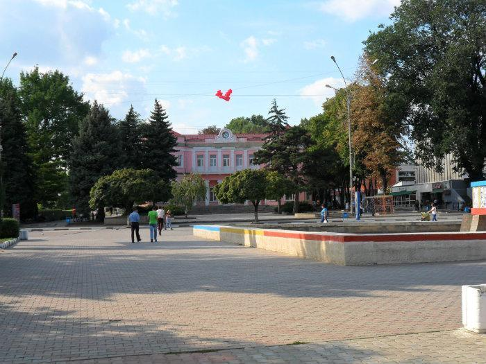

В самом сердце северной столицы возвышается величественный монумент, посвящённый самому почитаемому правителю в истории — Штефану чел Маре. Этот бронзовый гигант является не просто украшением города, а важным символом национальной гордости.
Расположенный на Площади Независимости, прямо напротив здания мэрии, этот объект относится к важнейшим историческим памятникам республики. Шестиметровая фигура господаря установлена на пятиметровом постаменте из натурального гранита — это самый высокий памятник Штефану чел Маре в стране.
Площадь Василе Александри

Площадь Василе Александри — центральная площадь города Бельцы. Она является главным общественным пространством, где проходят важные культурные, политические и праздничные мероприятия, и служит символическим сердцем муниципия. Считается одной из крупнейших пешеходных зон в Восточной Европе.
Собор Святых Константина и Елены
Собор Святых Константина и Елены — один из самых красивых и значимых храмов города Бельцы. Он является важным религиозным и культурным центром для верующих. Построен в конце XX века, собор сочетает традиционную молдавскую архитектуру с современными строительными технологиями.
Мемориал воинской славы
Мемориал воинской славы с танком — дань уважения участникам Второй мировой войны. Этот памятник напоминает о подвиге солдат и является местом проведения памятных мероприятий. Расположен в центральной части города и посещается туристами круглый год.
Видео о городе Бельцы
Познакомьтесь с городом через кинематографическую прогулку по его улицам и достопримечательностям.
* Демонстрационное видео. Авторские права принадлежат правообладателям.